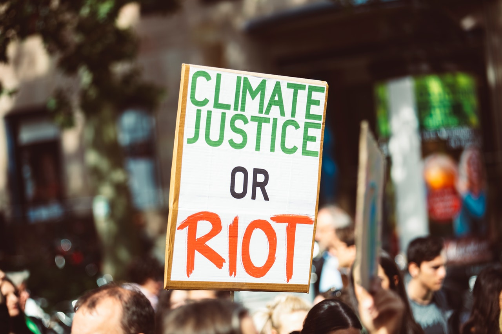

Pollution
We visualize pollution hotspots based on data from several sources like the NASA Ozone Monitoring Instrument (OMI). On this map, digital climate activists can register and pinpoint polluters, climate transitions and climate action.

Climate Action
We hope that our map can help to increase climate activism online. We believe that this can be done in a way that is based on democratic technology, trustworthy data and persistent activism.

Transition
By making climate transition initiatives visible, we want to accelerate the transition to a green economy and decarbonize faster.